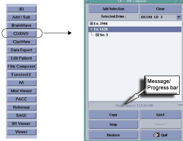
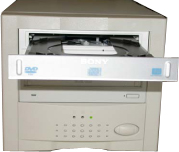
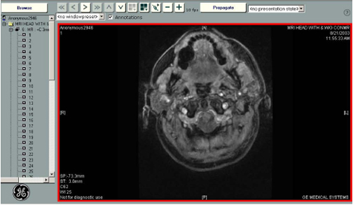
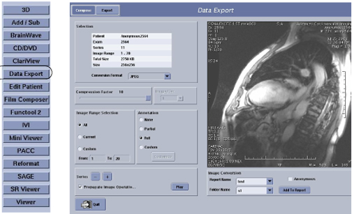
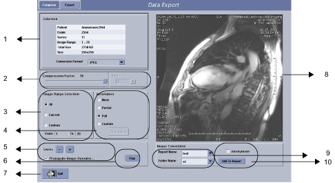
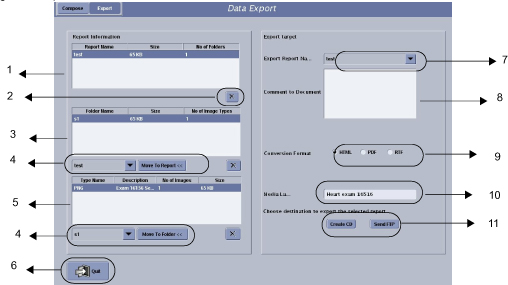
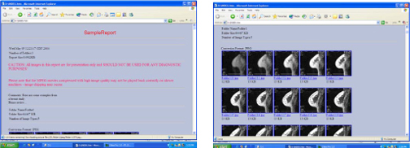
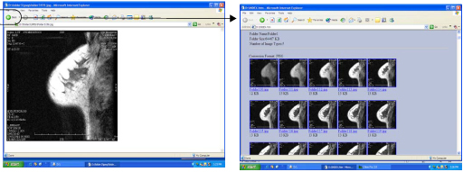

Operating Documentation
Direction 5133330-3, Rev# 14
Signa EXCITE HD 3.0T Service Methods
Module Version 1.0, Version Date 4/27/07
Operating Documentation |
Illustration 1: CD/DVD Composer Window on Image Desktop

The CD/DVD allows you to store DICOM images and a CD Viewer to a CD-R or DVD-R media that can be played back on a PC or laptop with a Windows™ 2000 or XP operating system. Images stored on a CD-R or DVD-R can be restored to the AW system or MR EXCITE HD system.
The CD/DVD interchange system is not considered part of the archive system but rather an ancillary storage device designed for sending select images or an entire exam to referring physicians. When an exam/series/ image is burned to a CD-R or DVD-R, the system does not consider the exam/series/or image as archived. Therefore, the archive column on the Browser does not change its state based on CD/DVD interchange activity.
The system does not know if a CD-R or DVD-R is in the drive until the copy action begins. Therefore it is necessary to note the size of the files you are selecting so that you do not exceed the media capacity. The approximate maximum capacity for a CD-R is 500MB and the approximate maximum capacity for DVD-R is 4 GB. The cumulative file size to be copied is displayed in the message/progress bar area of the CD/DVD Composer (see Illustration 1).
Table 1: Compatible CD and DVD Manufacturers
| CD-R | DVD-R |
| TDK 48x | TDX 2x |
| Verbatim 48x | Verbatim 2x |
A recordable CD (CD-R) or DVD-R can only be recorded once. All image data that you want to record on a given CD-R or DVD-R must be selected beforehand, and will be recorded in a single pass. It is not possible to add data on a CD-R or DVD-R.
When recording DICOM image data on a CD-R or DVD-R, you must always use a BLANK media.
Once you have started recording, click [Quit] to close the interface. The system continues to burn data to the CD/DVD in the background. To view the CD/DVD window, click [CD/DVD] from the Browser list of programs. Note that the list of items is blank. View the progress bar to note if the burning process is finished.
Image data can also be recorded on CD-R in PDF or HTML format, using the Data Export function.
Recordable CDs are considerably more sensitive to damage than the conventional CDROMs that you may be familiar with. Respect the handling instructions below.
| ||||
| To avoid image loss, never touch the recording surface of a recordable CD (CD-R). Handle the disk only by the outer edge or central hole. Do not place it face down on a hard surface. Fingerprints or scratches will make the disk unusable. | ||||
Store the disk in the protective case. Proper storage helps protect the data from damage due to scratches on the disk surface.
Do not leave the disk in direct sunlight or in a hot, humid environment. These conditions can warp and damage the disk.
Use only a felt tip permanent pen when labeling. Write only on the clear inner diameter of the disk (or the printed area of a CD-R). Never use a ballpoint or hard point writing tool as it may damage the disk. Do not use adhesive labels.
Use a soft, lint-free cloth to remove spots, dust, or fingerprints from the disk. Always wipe from the center to the outside edge of the disk. Never wipe the disk in a circular motion.
Do not use any chemical-based cleaners. These can damage the disk.
Do not use the CD/DVD program to permanently store your MR data. If the CD/DVD is scratched there is no recovery of the data.
 |
|
Place a CD-R or DVD-R in the CD/DVD external drive. Wait until the CD/DVD drive light turns off, which is an indication that the CD-R or DVD-R is spinning up to speed.
Click [CD/DVD] from the Browser program list to display the CD/DVD Composer.
The CD/DVD Composer can be sized by left-clicking and dragging the corners or sides of the window.
The CD/DVD Composer can be moved by left-clicking and dragging the window title bar.
Highlight the exam(s)/series/images from the Browser that you want to store to the media.
If only one exam is to be stored, left-click and drag all series within the exam, or from the menu bar, click Selection > Select all Series. Only highlighted series within the exam will be stored.
If multiple exams are to be stored, left-click and drag or Ctrl + click the desired exams. This action will select all the series within each exam.
Click [Add Selection] from the CD/DVD Composer.
The selected files are added to the CD/DVD Composer list. Click the + icon next to the exam or series list to see the exam or series contents.
The CD Composer prepares the data and updates the message bar with the cumulative file size as you add each selection. Do not exceed 500 megabytes for a CD-R or 4 gigabytes for a DVD-R.
To remove a series from the list, highlight the series and click [Clear].
Click [Copy] and [Yes] to the confirmation prompt to start the recording process.
Do not begin recording until all desired series have been added to the list. You cannot record more data to the CD-R or DVD-R once you have started the recording process.
The message/progress bar displays messages and a progress bar indicating the progression of the copy activity.
Error prompts may appear if the media is damaged, if the media is not blank, the files are too large for a single media, etc.
The progress bar displays 100% when recording is completed.
When the contents have been burned to the media, click [OK] to the Record Completed Success prompt.
Click [Eject] to remove the media from the drive.
Once you have started recording, click [Quit] to close the interface.
The system continues to burn data to the CD/DVD in the background.
[Stop] is the only button that stops burning data.
To view the CD/DVD window, click [CD/DVD] from the Browser list of programs. Note that the list of items is blank. View the progress bar to note if the burning process is finished.
|
Load the CD-R or DVD-R into the media drive.
Click [CD/DVD] from the Browser program list to display the CD/DVD Composer.
Click [Restore] from the CD/DVD Composer.
Highlight the data you want to restore.
Click [Local Disk] from the CD/DVD Composer and [Yes] to the confirmation prompt.
The only indication that the restoration is taking place is an hour glass shaped cursor.
Click [Stop] to stop the restore process at any time while the system is restoring data. Any images already transferred will be located on the hard drive. If you repeat steps 1-5, the system only restores images that have not yet been transferred.
Click [OK] to the Restore Completed Success prompt.
This prompt is not seen if you close the Restore window before completion.
Click [Quit] to close the Restore window and then [Quit] to close the CD/DVD Composer.
Click [Eject] from the CD/DVD Composer. If a store or restore process is active, the CD/DVD drive is locked and the eject button on the drive is inactive.
The CD DICOM Viewer is automatically loaded onto a CD-R or DVD-R that is burned from the CD/DVD program.
Illustration 2: CD Viewer.

Load a recorded CD-R or DVD-R into the drive of your PC running Windows Internet Explorer 5.5 or greater.
CD Viewer automatically launches.
Click [I Agree] to the Disclaimer of Warranties; Limitations of Liabilities prompt.
Refer to the instructions that follow for details on the operation of CD Viewer, or click the [?] icon.
Illustration 3: Data Export Window

Data Export allows you to either store or ftp MR images as JPEG, PNG, AVI, MPEG or MOV formats. The files can only be burned to a CD-R and only one report can be burned at a time. Once a CD-R has been burned, you cannot add more reports. In other words, it is a burn once process and not a re-writable process.
The JPEG, PNG, AVI, MPEG or MOV images can be viewed from a PC or laptop with a WindowsTM 2000 or XP operating system using Internet Explorer 5.5 or later.
There are two tabs on the Data Export window: Compose and Export. The Compose tab allows you to define the compression factor, annotation level, W/L, scroll, zoom, and output format for the series you want to export. The export tab is a list of all the exams and series you have in the Data Export program. This means that you can compose a series and then export it to either a CD or ftp site at a later date. Exams and series stay in the Export program until they are actively deleted.
Illustration 4: Compose Tab

Table 2: Compose Tab Details
| No. | Selections | Description |
|---|---|---|
| 1 | Selection | Selection displays the Patient Name, Exam and Series number, the number of images in the series, the file size of the images with the current compression selection and matrix size. |
| Conversion Format | Conversion Format is a pull-down menu from which you can select the image format for the currently selected data set. Format choices are: JPEG, PNG, AVI, MPEG, and MOV. AVI, MPEG, and MOV are all movietype formats. Choose the format that is compatible with the movie player on your PC or laptop. | |
| 2 | Compression Factor | Compression Factor only applies to JPEG and MPEGs. The lower the number, the less the compression, the higher the image quality but the larger the file. |
| Image/Sec | Image/Sec is movie play back speed and therefore it is only applicable for MPEG, AVI or MOV files. | |
| 3 | Image Range Selection | Image Range Selection allows you to select the images you want to place
in the designated folder. For example, if you have a multi-phase series selected
and all you want is the first phase in the MPEG, then select the range of
images representing phase 1 of your data set. The ability to select a subset of images from the selected series is particularly important if you plan to ftp the files rather than burn a CD. |
| 4 | Annotation | Annotation allows you to set the level of annotation for the images: none, full, partial (a subset of the full annotation) or custom which activates the [Customize] button. Click to display a pop-up window from which you can turn on specific annotation fields. |
| 5 |  Propagate | Series selection buttons allow you to navigate through series within
the exam. Propagate Image Operations allows you to apply the image manipulations (W/L, zoom, scroll) you’ve performed on all images forward from the currently displayed image within a series. |
| 6 | Play/Stop | Click [Play] to preview the MPEG, AVI, or MOV file. Click [Stop] to quit playing the movie. |
| 7 | Quit | Click [Quit] to close the Data Export window. |
| 8 | Image area | The image area displays the current images by scrolling through them in a cine loop. Use the keyboard Page Up and Page Down keys to move through the images manually. |
| 9 | Report Name | Report Name appears at the top of the report that will be created once you execute the data export. It also appears in the Export data list. Typically the patient’s name and type of file are entered as the Report Name. There can be no spaces or characters other than alpha numeric. |
| Folder Name | Folder Name is the name of the folder to which you want to file the Report Name. From the Export tab, you can view the data listed within each folder. The data within a folder is sorted by file type. For example, if you added 10 JPEGs from the T1 series and 20 JPEGs from the T2 series you will see a list of 30 JPEGs in that folder. If you want these JPEGs separated, you must place them in separate folders. | |
| 10 | Anonymous | Click the Anonymous box and the images added to the report will have the patient’s name replaced with Anonymous and the exam number. |
| Add to Report | Add to Report adds the current data set to the report from which you
can either burn the information to a CD-R or ftp it to an IP address. A Data
Conversion progress window appears once you click [Add to Report]. Click [Cancel]
if you want to stop the data conversion.
|
| ||||
| It is important to note that reports stay listed in the Export tab until you remove them. Consider the length of time you need to keep the file in the program based on if you need to burn another CD-R or ftp the report more than once. | ||||
Illustration 5: Export Tab

Table 3: Export Tab Details
| No. | Selection | Description |
|---|---|---|
| 1 | Report Name list | The list of all the report names in the data base. |
| 2 | Highlight an item in any of the list displays (Report, Folder, or Type) and click the Delete icon to remove the item from the list. Items remain on the list after you Quit Data Export until they have been deleted through this method. | |
| 3 | Folder Name list | This list identifies all the folders associated with the report name. Note the file size to make sure you can ftp the file or store it on a single CD-R. |
| 4 | Move to | The Move to selection allows you to move the currently highlighted item to a destination of your choice. For example, you can highlight an item in the Type list and add it to a particular folder in the Folder list. The size of the data that comprises each folder is listed. |
| 5 | Type Name list | The list of all the file types within the highlighted folder. Keep in mind, that the only items displayed in the list are the item types. If, for example, you added 20 T1 JPEG images to Folder 1 and then added another 20 T2 JPEG images to Folder 1, the number of JPEGs in folder 1 is 40. The quantity and size of each data type is listed. |
| 6 | Quit | Click [Quit] to close the window. |
| 7 | Report Name | The name of the report that you are going to export. Select the report from the pull-down menu. |
| 8 | Comment | Type in a comment that appears on the report. Do not apply a carriage return when typing. The text will wrap automatically when appropriate for the finished report. |
| 9 | Conversion Formats | Click one of the radio buttons to determine the file type. Typically select HTML. |
| 10 | Media Label | Click in the type-in field and enter a name for the CD. |
| 11 | Create CD | Click [Create CD] to start burning the report
to the CD-R that is currently in your system’s CD/DVD drive. Once the
write process is active the following prompt appears.
When the system has successfully written the CD, the following prompt appears.
Click Cancel if you chose to stop burning the CD before all data is written to the CD. Note that this action may corrupt the media and you may need to insert another CD and start again.
|
| Send FTP | Click [Send FTP] to open the ftp window.
Enter information for all the fields. The User Name, Password, and IP Address are for the FTP destination site. Selecting Save the Settings only saves the Target Directory information. There must be a target directory at the IP address to successfully transfer files |
From the Browser, highlight the series you want to export. Only one series can be exported at a time.
Click [Data Export] from the Browser program list.
The Compose tab should be selected, if not click Compose.
Review the images in the Compose viewport.
Middle-click and drag to adjust W/L.
Right-click and drag to adjust zoom factor.
Left-click and drag to scroll.
Press the Page Up or Page Down keys on the keyboard to navigate through the images.
Click [Play] to view the images in a cine loop.
Once you are satisfied with the image appearance (W/L, zoom, scroll), display the first image in the series and click Propagate Image Operations box.
Select the conversion format from the pull-down menu.
Select the desired image range. If you want a subset of the images, click the Custom radio button and type the range in the text box.
Select a compression factor.
The smaller the number, the higher the image quality and the larger the file size.
Select an Annotation option. If you want the patient name to be displayed as Anonymous with the exam number, click the Anonymous radio button.
Enter a name for both the report and the folder. Use no spaces or characters other than alpha numeric.
Click [Add to Report].
If you change your mind and decide not to add the data to the report, click [Cancel] from the progress bar window.
Click [Quit ]to exit the Data Export application.
To add another data set to the report, repeat the last 12 steps.
|
Click [Data Export] from the Browser list. If you are already in Data Export, click the Export tab.
Select the desired report from the Export Report Name pull-down menu.
Select the desired data set from the Type Name list.
Optional: type a message in the Comment text box. Do not press carriage return while entering your text, the system will adjust the text for the final report.
Select a Conversion format, typically html.
Do one of the following:
To burn the report to a CD, place a CD-R in the system CD/DVD drive, click [Create CD], and [OK] to start the writing process.
A message displays while the CD is written.
When the CD writing step is completed, the CD ejects from the drive. Click [OK] to the CD Written Successful prompt.
Click [Send FT]P to send the data to an IP address. Complete all the fields on the FTP window and click [OK]
Click [OK] to the Successful File transfer prompt.
The media is removed from the drive.
Click [Quit] to exit Data Export.
Place the CDROM in the CD drive of a PC or laptop running Windows 2000 or XP.
The CD launches automatically. If it does automatically start, open the CD by clicking on your My Computer icon and open your CD drive. Click INDEX to open the file.
The report is opened and displayed from an Internet Browser. See Illustration 6.
Illustration 6: Sample Report

Place the cursor over an image and left-click to magnify the image, see Illustration 7. Click the Back arrow on your internet Browser menu bar to return to the report.
Illustration 7: Magnified Image

When finished viewing the report, close your internet browser by clicking File > Close from the menu bar.
Remove the CDROM from the CD drive and store it.